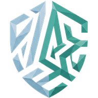

BES2 · Gen2–4

Rad einschalten, USB-Kabel an die Bedieneinheit (Kiox/Nyon) stecken und hier tippen.
Experiment für Räder mit zwei Akkus (DualBattery). Sucht nur lesend nach einem zweiten Akku-Knoten und speichert ein kleines Protokoll zum Einschicken. Es wird nichts verändert. Bitte vorher im Tab „Mein E-Bike" verbinden und auslesen.
Tippe auf etwas, das du am Rad ändern möchtest. Änderungen werden gesichert und sind mit „Zurücksetzen" rückgängig. Kein Tuning, keine Akku-Grenzen.
Bevor du SelfBike nutzt, lies bitte die folgenden Hinweise und bestätige sie.
SelfBike ist ein privates, unabhängiges Projekt. Es steht in keiner Verbindung zur Robert Bosch GmbH, Bosch eBike Systems, Cube oder anderen Herstellern und wird von ihnen weder unterstützt noch geprüft. Marken- und Produktnamen gehören ihren Inhabern und werden nur genannt, um die Kompatibilität zu beschreiben.
SelfBike greift über USB direkt auf die Elektronik deines E-Bikes zu. Das Auslesen verändert nichts. Änderungen – zum Beispiel an Licht oder Service-Erinnerung – schreiben Werte in dein E-Bike. Trotz Sicherungen wie Backup und Rücklesung können Fehler, Fehlfunktionen oder Schäden, etwa an Beleuchtung, Elektronik oder Akku, nicht ausgeschlossen werden.
Eingriffe mit Software, die nicht vom Hersteller freigegeben ist, können Garantie- und Gewährleistungsansprüche gegenüber Hersteller oder Händler beeinträchtigen.
Du bist selbst dafür verantwortlich, dass dein E-Bike nach jeder Änderung verkehrssicher ist und den geltenden Vorschriften entspricht, zum Beispiel bei der Beleuchtung. SelfBike bietet bewusst keine Funktionen zur Steigerung von Leistung oder Geschwindigkeit.
SelfBike wird kostenlos und ohne jede Gewähr bereitgestellt („wie besehen"). Für Richtigkeit, Vollständigkeit und Eignung der angezeigten Daten – etwa Akkuzustand oder Fehlercodes – wird keine Gewähr übernommen. Sie ersetzen keine Prüfung durch einen Fachhändler.
Die Entwickler von SelfBike übernehmen keine Haftung für Schäden, die durch die Nutzung oder die Nichtnutzbarkeit von SelfBike entstehen – einschließlich Schäden am E-Bike, Datenverlust und Folgeschäden. Dies gilt nicht, soweit eine Haftung gesetzlich zwingend vorgeschrieben ist, insbesondere bei Vorsatz, grober Fahrlässigkeit sowie bei Verletzung von Leben, Körper oder Gesundheit.
Das Auslesen und Ändern läuft vollständig in deinem Browser. Daten deines E-Bikes werden nicht an die Entwickler von SelfBike übertragen. Backups und Berichte speicherst du selbst.